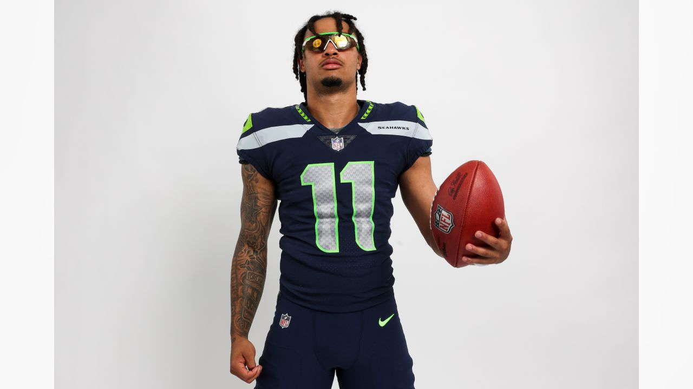
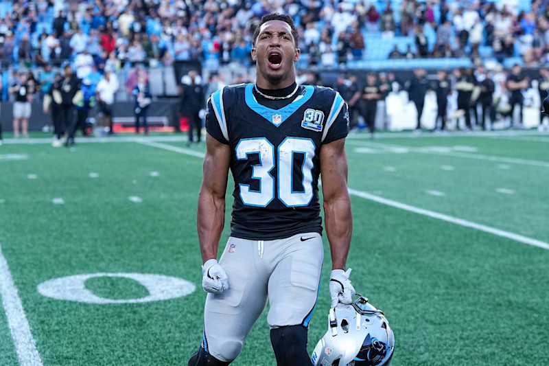
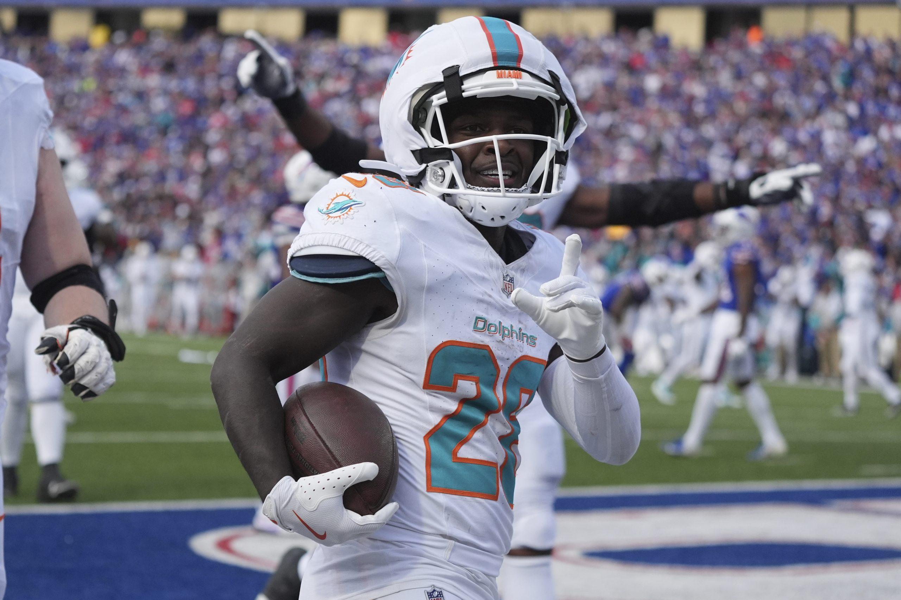
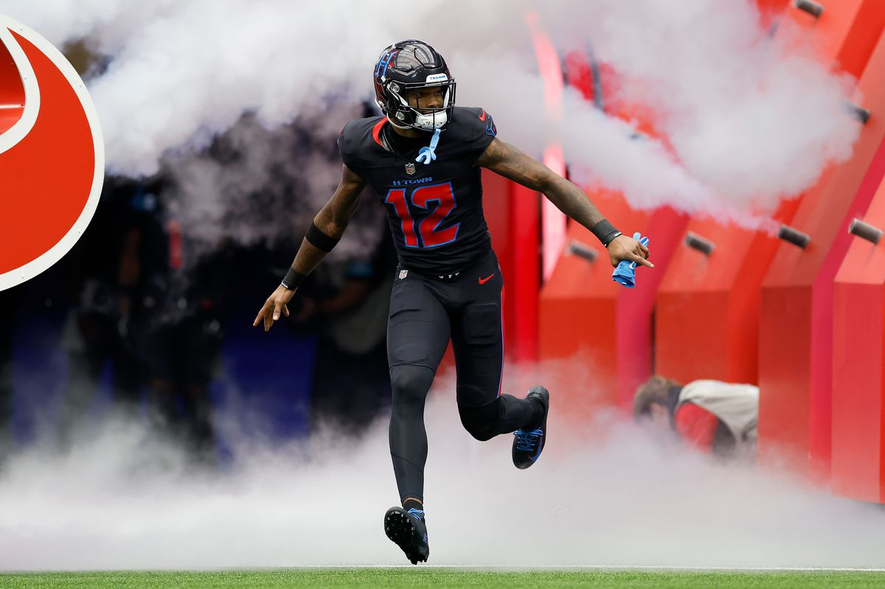
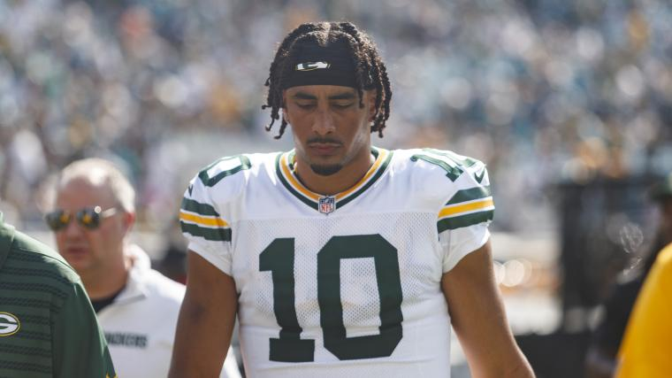
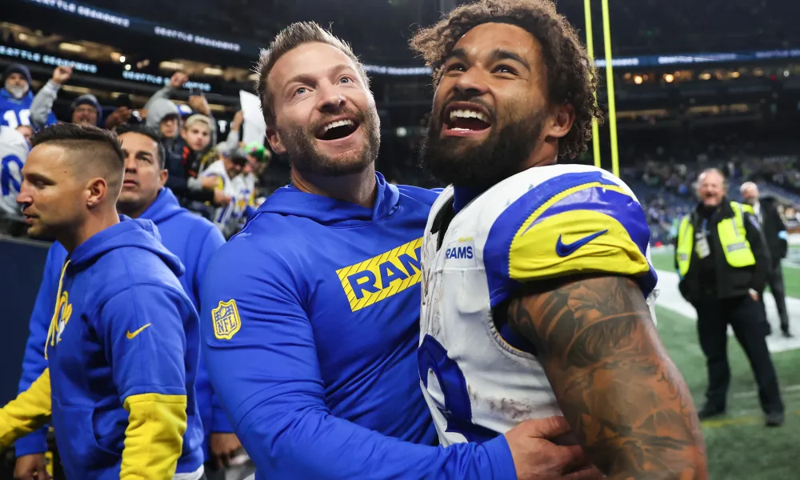
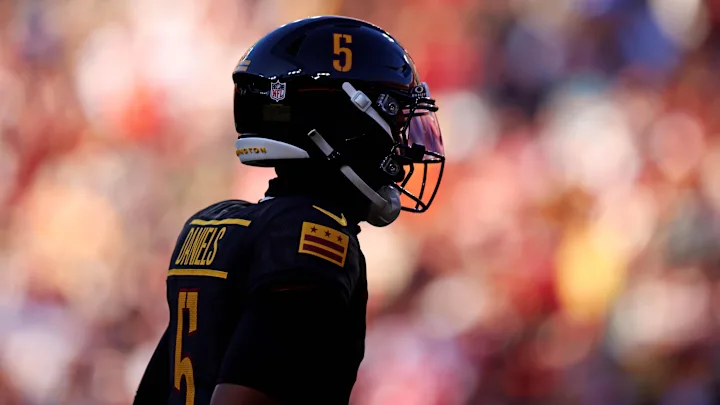
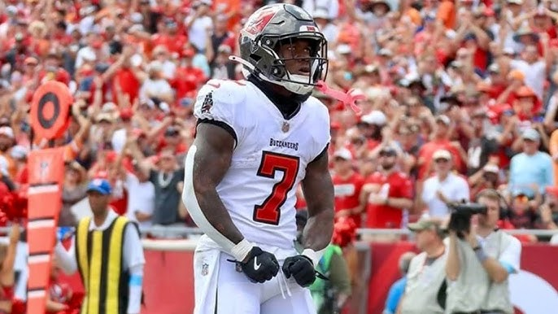

We’re getting into the real shit now. In a second, I’ll detail the road ahead, but first, a quick reminder… THE TRADE DEADLINE IS WEEK 11!!
With four weeks to go, there are three teams out in front due to their record and/or PF. But there’s a real mix for the fourth playoff spot. Of course, there are still four games left, and 1-3 aren’t safe, but let’s look at the craziness of the rest of the season for the middle of the pack.
Week 10-12 Matchups for the Middle (based on current standings) 4th - Neil (5-4) - Kris, Jake, Pangy 5th - Jake (5-4) - Pangy, Neil, Kris 6th - Pangy (5-4) - Jake, Kris, Neil 7th - Kris (4-5) - Neil, Pangy, Jake
This is honestly fucking nuts.
It’s gonna be a good one. Also, CJ and Joel (8th and 9th), could be in the mix if they string together a few wins during this stretch, as they’re close in the PF battle.
Matchup of the Week
Let’s do it… It’s time for me to finally be in one.
Jahmyr We Go Again (5-4) vs. Sweet Brotha Numpsay (5-4) As mentioned above, we’re both right on the edge of the playoffs. But it’s not just that. This one’s personal.
Pangy has entered the matchup with little respect over the last two years, and this is a chance to prove it. Plus, I know he’s had this matchup circled on his vision board since Week One when I smoked his ass. The problem for Pangy? He’s gotta root against Purdy, CMC, Deebo and Moody! What can I say, I’m a huge Niners fan!
What to watch for: * Niners vs. Pangy - Jake has Purdy, McCaffery, Deebo and Moody, it’s gonna hurt to root against these guys for Pangy * Terry McLaurin been a burner recently - he has 1800 TDs in the last three games, can he keep it up? * Falcons vs NO - Pangy has London and Pitts against NO who can’t guard a nutsack * My matchups aren’t great, but McPherson didn’t do much on Thursday which gives me a slight headstart. * McCaffery is back!
Waiver Wire Wizards and Wieners * Wizard - Tony - Hopkins $26 - Nuk looked pretty good last week. I don’t really want to talk about it, okay. * I don’t know who to pick here, but I noticed that this week, there were a lot of good WR candidates who could still break out, not to mention Nuk. Here’s how they rounded out; we’ll have to see who hits. * Jameson Williams - PJ ($1) -> Kris ($6, via PJ’s quick add and drop) * Rome Odunze - Tony ($1) * Jordan Addison - PJ ($1) * Jaylen Waddle - Seif ($1) These guys have cool names.
🏆 Survivor Pool Champ Andy has emerged as the champeen of the survivor pool - way to not score the least amongst the people who were still in the pool, Dave!
📈 Week Ten Power Rankings 📈
1. Mr. Turna 2-to-uh-4 ↔️
7-2, W4, PF: 1144.08, $0 FAAB This marks Andy’s impressive two-week run at the top of the rankings. Andy’s made some great investments - St. Brown and McBride have been great since being acquired via trade. Andy’s also found the diamonds in the waiver wire rough with Hubbard and Chase Brown. Oh, and he has Lamar.

2. 8==D ⬆️
6-3, W1, PF: 1193.86, $10 FAAB JC: Jesus Christ -> Ja’Marr Chase. Also, he’s got Henry. This is the team I don’t want to play against. Not to mention Achane was the RB2 both of the last two weeks, giving him four top-three finishes this year. PJ is also making some low-key good moves to keep things promising on the edges of his stars.

3. Josh Allen’s Fat Hog ⬆️
5-4, W2, PF 1099.84, $45 FAAB Neil’s one of the hottest teams in the league and gets Nico back shortly. God, looking at Neil’s roster, I can’t find a way to start a lineup that would be shaky (minus Pearsall, but that’s just because he’s played one game.)

4. Won’t You Be My Nabers ⬇️⬇️
_6-3, L1, PF: 1211.78, $82 FAA_B Seif’s probably going to lose this week due to PJ’s huge TNF. You never know, but Seif’s team also seems a little less scary. Ceedee has seemingly lost Dak fo the rest of the season, and Nabers hasn’t been the same since his concussion, though that seems like it could course correct soon.
5. Jahmyr We Go Again ⬆️⬆️
5-4, L2, PF 1097.14, $21 FAAB You know what, fuck you, yeah, I feel like I should be here. But god, I need my players to stay healthy, and that ain’t working out so good. My injuries have shown my lack of depth, considering the abysmal play of Etienne - I still believe the talent is there, but I think the coaching has gotta change to unleash him again.
Oh, I forgot to mention that CMC is back this week. I should be a handful if I get healthy CMC and Kupp weeks ahead, hence the up arrows.
6. Swift Loves Kelce ↔️
4-5, L2 , PF: 968.10, $22 FAAB A little behind in PF with the teams directly above Kris in the mix but has an opportunity for wins against the three teams directly above him - wins matter. A lot rides on the shoulders of Jordan Love and Jayden Reed. Unfortunately, they’re on a bye this week, and I’m not sure Love can walk right now.

7. Sweet Brotha Numpsay ⬇️⬇️
5-4, L2, 1034.96, $2 FAAB Saquon and Kyren are machines. They’re the engine that keeps this ship running. But this team will go as its receivers will - McLaurin’s been excellent recently, and Adams and London seem to be vibing at the right time with Pangy’s playoff push in flight.

8. Chris’ Cocaine Train ⬆️
3-6, W2, PF 1055.90, $9 FAAB It’s hard to rank him above anyone with two more wins, but this team is complete and if CJ can string together wins while 5-7 beat each other up, you never know. Is the Hail Mary still in play for the Daniels-lead Cocaine Train?

9. Griddy Griddy Bang Bang ⬇️
3-6, L1, PF 1001.64, $29 FAAB I like Joel’s team, sometimes things just don’t work out. I guess it’s just been a case of the ups and downs, with Cook, Thomas, Engram, Puka, and Bucky all having their moments but nothing consistent. Joel still holds on to a glimmer of hope.

10. Above and Bijan ↔️
1-8, W1, PF 964.52, $26 FAAB Tony gets his first win. This is huge since we would have had to kill him. It’s a relief when this moment comes each season. Let’s see, hmmm, what to talk about? Um, Tony’s got some players on his team, that’s 100% for sure. Oh, he spent $26 on Nuk this week, that’s cool!
Good luck to everyone besides Pangy! 😙
Pressure is something you feel when you don’t know what the hell you’re doing.”
- Peyton (Painin’) Manning